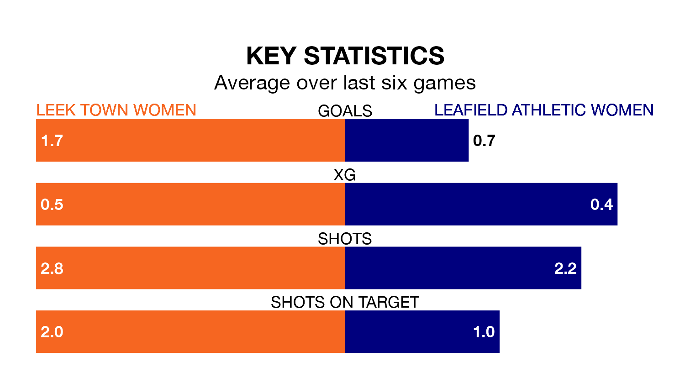

Sunday's match at Harrison Park sees two relegation candidates play each other, as ninth-ranked Leek Town Women host bottom of the table Leafield Athletic Women.
Leek Town have picked up 12 points from their first 12 Women's National League Division One – Midlands games, with three wins and three draws.
That is seven points more than Leafield Athletic have collected, having won one and drawn two.
Leek Town are in disappointing form in Women's National League Division One Midlands, with one win and two draws from their last six games.
With no wins and two draws over that period, Leafield Athletic's form is worse – they have taken two points from 18, compared to the hosts' five.
With 10 goals in 12 games so far this season, the away side are the league's second-lowest scorers with 0.8 goals per game. And they are conceding more than average, letting in 30 goals at a rate of 2.5 per game.
Leek Town are also below average scorers, with 1.5 goals per game, compared to a league average of 1.8. They have conceded 2.3 goals per game.
In the last five years, Leek Town and Leafield Athletic have played each other on five occasions. Leek Town won three of them, Leafield Athletic one, and they drew once.
On average, Leek Town scored 1.8 goals and Leafield Athletic 1.2 in those matches.
Their last meeting was on September 10, when Leek Town won 2-0 away.
Leek Town's last match was on January 14, a 1-1 draw against Lincoln City LFC.
Leafield Athletic lost 3-0 against Boldmere St. Michaels Women last time out, also on January 14.
Updated: 08:51 (UTC), 25/01/24